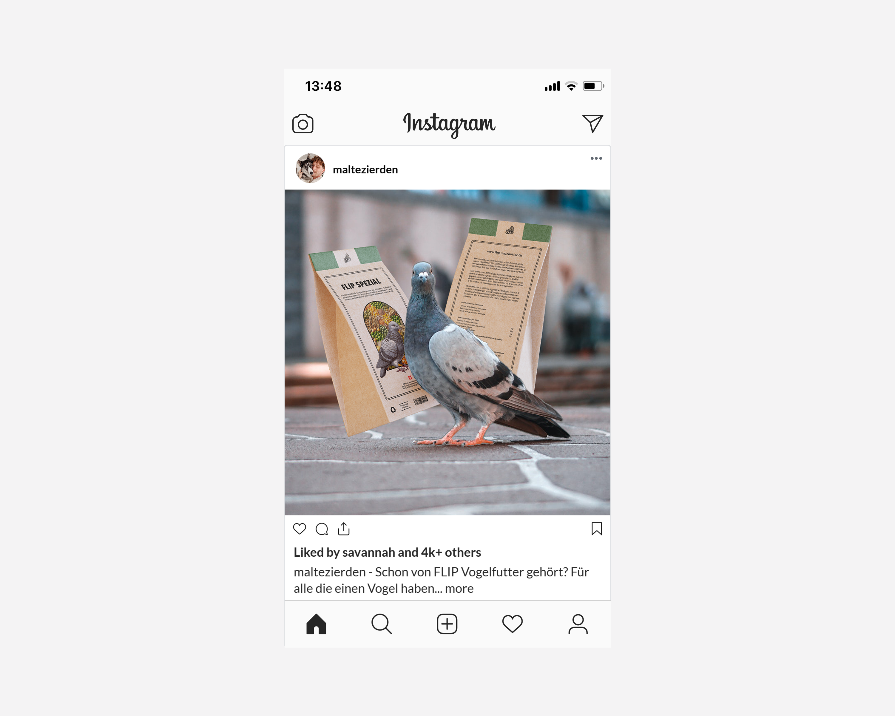
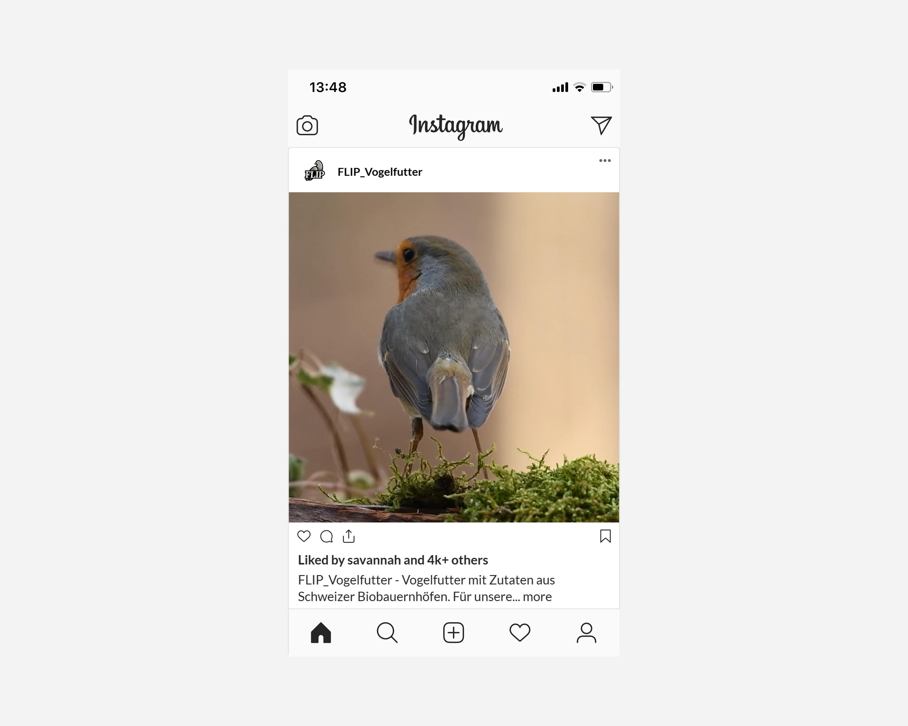
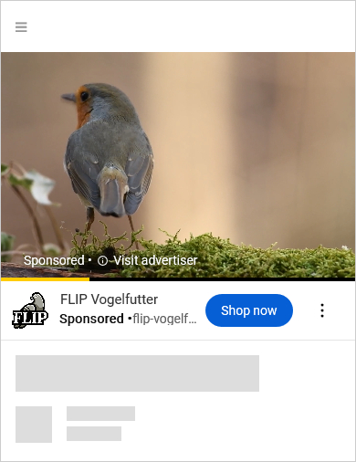
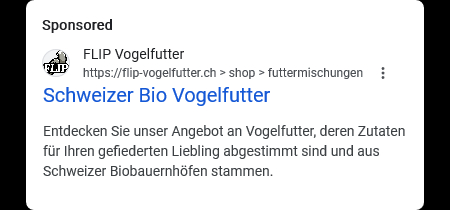

Werbekampagne FLIP 2024
Sinn dieser Werbekampagne ist es, FLIP Vogelfutter den Menschen erstmalig zu präsentieren.
Influencer
Der Gewählte Petfluencer ist im folgenden Mockup zu sehen (Name aus Privatsphäregründen nicht auf dieser Website direkt enthalten), der unter anderem eine Stadttaube als Haustier hat. Er präsentiert unser Produkt organisch in einem Bild, in dem er bestätigt, dass er das Produkt gut findet. Sein Profil auf Instagram hat 910.000 Follower. Seine Tierfreundlichkeit und sein Engagement für die Umwelt machen ihn zu einem perfekten Influencer für unser Produkt.
Werbespot
Desweiteren wurde ein Werbespot produziert, der auf Instagram und auf Youtube läuft:
 Search
In der Google Suchmaschine wird ebenfalls geworben:
